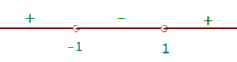

Intervals of Increase and Decrease
Increasing
If f is differentiable at a:
Decreasing
If f is differentiable at a:
Calculation of the Intervals of Increase and Decrease
Study the intervals of increase and decrease of:
f(x) = x3 − 3x + 2
To determine the intervals of increase and decrease, perform the following steps:
1. Differentiate the function.
f'(x) = 3x2 −3
2. Obtain the roots of the first derivative: f'(x) = 0.
3x2 −3 = 0 x = -1 x = 1
3. Form open intervals with the zeros (roots) of the first derivative and the points of discontinuity (if any).
4. Take a value from every interval and find the sign they have in the first derivative.
If f'(x) > 0 is increasing.
If f'(x) < 0 is decreasing.
On the interval (−∞, −1), take x = −2, for example.
f'(−2) = 3(−2)2 −3 > 0
On the interval (−1, 1), take x = 0, for example.
f'(0) = 3(0)2 −3 < 0
On the interval (1, ∞), take x = 2, for example.
f'(2) = 3(2)2 −3 > 0

5. Write the intervals of increase and decrease:
Increasing: (−∞, −1)  (1, ∞)
(1, ∞)
Decreasing: (−1,1)
Example of the Intervals of Increase and Decrease